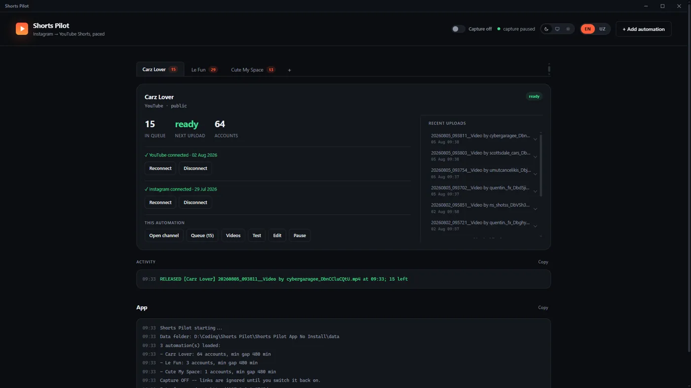

01Windows app
Shorts Pilot — Instagram to YouTube, paced
A Windows desktop app that watches the clipboard: copy a reel link and it downloads the clip, works out which channel it belongs to, and releases it on a per-channel interval so a burst of links doesn't become a burst of uploads.
Source isn't public by default — the site has a request page, and I hand out an access code to anyone with a good reason to read it.